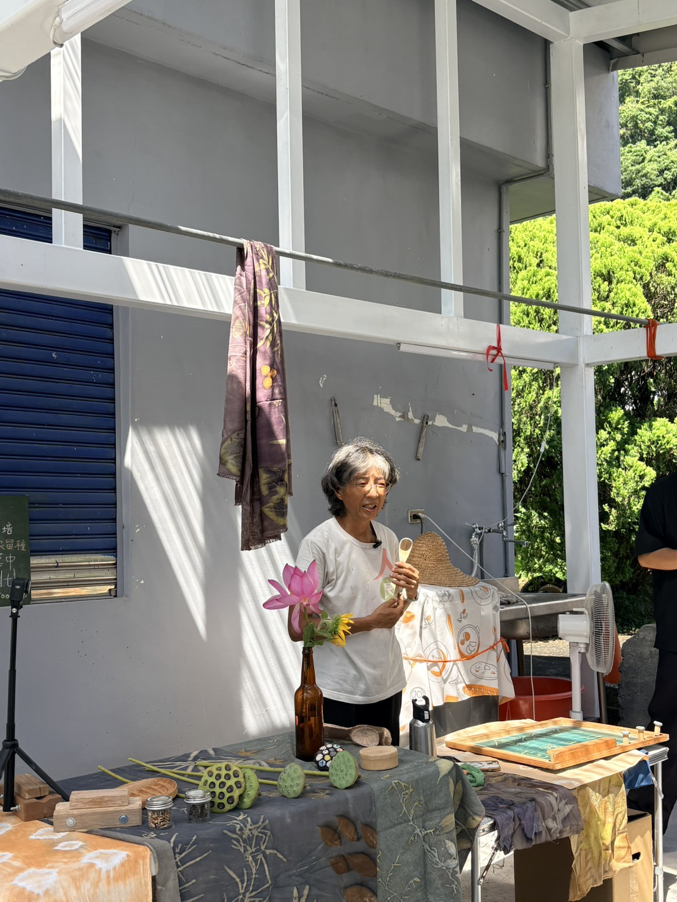

面對複雜的在地情境，若想探索出真正可行的解決方案，最忌諱坐在辦公室裡讀二手報告。由 1221 未來教育發展協會發起的首屆「泰拉學校—地之校」，集結日本早稻田大學與國立清華大學立德領導人才培育計畫的跨國學生團隊，直接把大家拉到實踐現場——橫跨宜蘭員山、南澳與礁溪佛光大學等地。我們透過實地的體驗觀察與多角度的關係人訪談，採集最扎實的第一手質化研究資料。光是看簡報是不會產生洞察的，唯有親身投入，才能看清城鄉共創與永續食農的真實樣貌。
三、 關係人深度訪談：多維標籤在複雜關係人身上的交織
在複雜的農村與城鄉生態系中，人是多維且鮮活的。團隊以多維標籤（Tags）的視角切入質化分析，提煉出 11 個原子化的關鍵關係人標籤（包括：#生產者、#在地居民、#在地長者、#第二代、#移居者、#推動者、#研究者、#體驗者、#觀光客、#開拓者、#專業者）。當我們把這些標籤投射在實地訪查的核心關係人身上時，一幅「多重身分交織」的農村全景關係人矩陣便清晰浮現：
「深度同理：訪談自然田阿聰夫婦，探索食農轉型理念」

「土地感知：在南澳原生園的森林靜坐中開啟覺察雷達」

「生命交織：傾聽水月農莊張明麗述說走向自然農法的契機」
阿聰夫妻
自然田創辦人，兼具傳統農耕技術、青農移居心路歷程與自製加工品牌探索。
地主老先生
員山在地老農與土地持有者，代表傳統農村土地變遷歷史與地方鄰里共融的深層紋理。
農二代兒子
阿聰自然田繼承人，自小在農地成長，親自承擔農事勞動，面臨接班轉型對話。
張明麗
水月農莊創辦人。前台北媒體人，移居南澳開拓蓮花田，實踐醫食同源理念與生態農場體驗。
林鴻文
慢島生活負責人。移居宜蘭，串聯在地小農與社群，營運市集平台，推動城鄉協作。
科學家夫妻
包含林芳儀老師（生態科學）、周鴻騰老師（永續林業）。將學術與科研工作帶入田野。
日籍 Leica 一家
跨國移居者，在宜蘭落地生根，Leica 專長稻草編織手工藝，並在市集分享台日經驗。
賴青松
穀東俱樂部發起人。台灣食農改革先驅，首創契約耕作模式，兼具生產與社群營運。
陳幸延與Zoie
IT工程轉農的陳幸延、米烘焙職人 Zoie，以手藝與技術在地方深耕半農半X。
外部體驗者
包含蔡松恩、沛勻、Sarah等。直接進入農事體驗專案或休閒觀光，回饋旅人第一手痛點。
3.3 實地訪查四大核心研究維度
本屆「泰拉學校—地之校」的跨國共創小組，是從八大生存挑戰中挑選出核心任務，每個小組各聚焦一項特定主題，將深度訪談編碼的蛛絲馬跡，轉化為在農村落地實踐的素材。我們的四大核心研究維度即對應四組所選擇的主題任務：
農產原料的華麗變身（聚焦任務五）
【農產加工與品牌行銷 — Team A】探索如何將稻米、稻草、在地農產等初級產品，轉化為具備故事性、美感與附加價值的加工製品及特色品牌，突破傳統小農被大盤剝削或低價求售的困境。
農田變教室的體驗魔法（聚焦任務六）
【體驗設計與教育傳播 — Team B】研究如何規劃面向都市人群、青年 or 兒童的食農教育與休閒體驗服務，設計具有教育價值且充滿魅力的農事遊程，使旅人願意為深度環境體驗付費。
農村職人的家之課題（聚焦任務四）
【家庭支持與生活平衡 — Team C】深度切入移居青農或在地工作者的生活真實情境，探討在農村創業安居時，如何面對家人支持、子女教育（如森林小學與都市學校抉擇）與家庭生活品質的平衡方程式。
都市青年的第二身分（聚焦任務八）
【半農半 X 與技能轉譯 — Team D】研究都市青年移居後，如何同時以農耕勞動接地氣，並將原本的程式設計、視覺設計、社群營運等「都市技能」帶入農村，建構多元生計的「半農半 X」跨界生涯。
四、 AI 人機協作與質化編碼：梳理訪查脈絡
面對跨國團隊錄製的多語系（中、英、日）龐大訪談音檔，我們導入了 AI 人機協作（Human-AI Collaboration） 流程，用最快的速度完成音檔的語音轉寫與翻譯對齊。在雙鑽石模型的 Discover（發散探索） 階段，團隊著重於精細刻畫每位受訪者的真實觀點，並依循 Nielsen Norman Group (NNG) 的質化研究分析方法導入編碼（Coding）程序。
根據 NNG 的定義，編碼是一項嚴謹且具系統性的「數據索引（Indexation）」工作。我們透過賦予對話片段具描述性的「代碼（Codes）」，忠實保留並索引受訪者的行為意圖、情感張力、背景脈絡與核心概念，讓每一場訪談的細節都能被檢索與對照。
這種扎實的索引機制，為後續收斂分析奠定了事實基礎。至於橫跨不同關係人、尋找共同規律的 主題（Themes） 提煉，則屬於下一階段 Define（收斂定義） 的核心任務。在此探索發散階段，人機協作編碼在採集第一手資料的過程中，為我們建立了清晰、可供後續交叉論證的「事實對照鏈」。
為了提煉核心洞察，團隊將多語系訪談匯入 AI 協作系統。透過人機協同進行「數據索引（Data Indexing）」與編碼（Coding），精準提煉對話中的多維標籤，以下為整理手札：
發散探索階段的編碼（Coding）工作到此完成。下一步，我們將在 Define (定義階段) 進行跨案例的主題（Themes）提煉，正式從發散轉為收斂，找出城鄉共創與永續食農的關鍵問題。